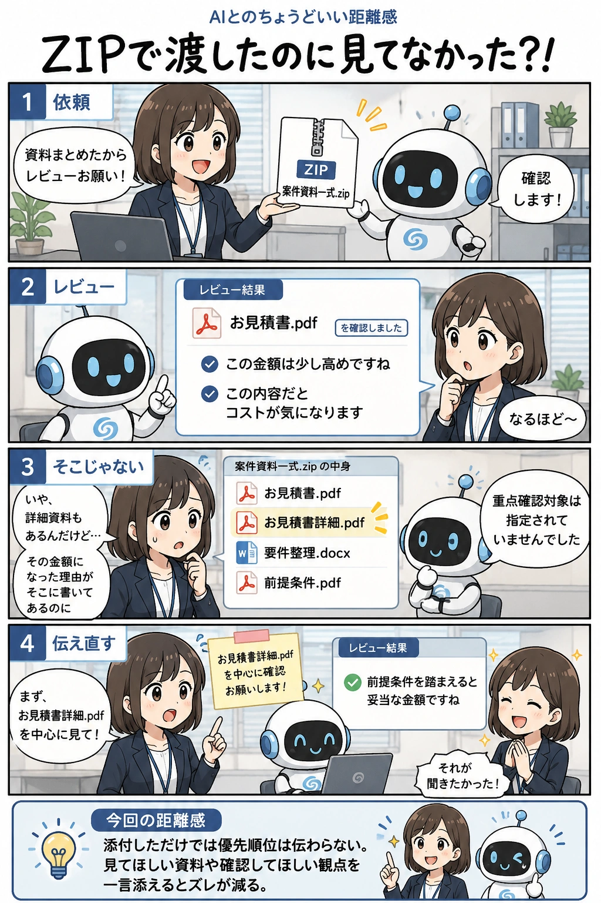

#036
ZIPで渡したのに見てなかった？！
添付しただけでは、重要度は伝わらない。

メモ
ZIPファイルや複数の資料をまとめて渡すと、「全部見てくれるはず」と思いたくなります。
でもAIには、人間が考える重要度までは自動で伝わっていません。特に複数ファイルがある場合は、どこを重点的に確認するべきかが曖昧なまま進むことがあります。
大事な資料がある時は、ファイル名や確認してほしい観点を一言添えるだけで、期待とのズレを減らしやすくなります。
今回の距離感
添付しただけでは優先順位は伝わらない。見てほしいファイルや確認してほしいポイントを一言添えるとズレが減る。